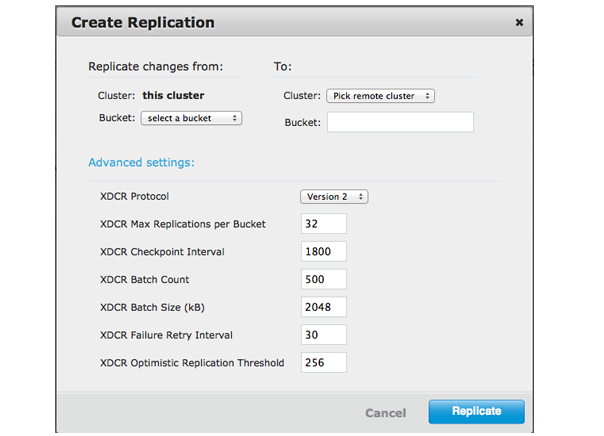

Specifying XDCR settings
When creating a new replication, advanced settings are modified (from the default) via XDCR > Ongoing Replications > Create Replication.
To change the replication protocol for an existing XDCR replication, delete the replication and then re-create the replication with your preference.
Note: How you adjust these variables differs based on what whether you want to
perform unidirectional or bidirectional replication between clusters. Other factors for
consideration include intensity of read/write operations on your clusters, the rate of disk
persistence on your destination cluster, and your system environment. Changing these parameters
impacts cluster performance and XDCR replication performance.
- Navigate to XDCR > Ongoing Replications > Create Replication.
- In the Create Replication panel, click Advanced Settings. 
-
Under Advanced settings, choose an XDCR Protocol version. The XDCR
protocol defaults to version 2.
- Version 1 uses the REST protocol for replication. This increases XDCR throughput at destination clusters. If the Elasticsearch plug-in used, choose version 1 because it depends on XDCR.
- Version 2 uses memcached REST protocol for replication. It is a high-performance mode that directly uses the memcached protocol on destination nodes. Choose version 2 when setting up a new replication with Couchbase Server 2.2 or later.
- Change the XDCR settings. These settings plus additional internal settings can be modified via the REST API.
- Click Replicate.
- After creating the replication or updating the setting, view or edit them by clicking Settings in Outgoing Replications.